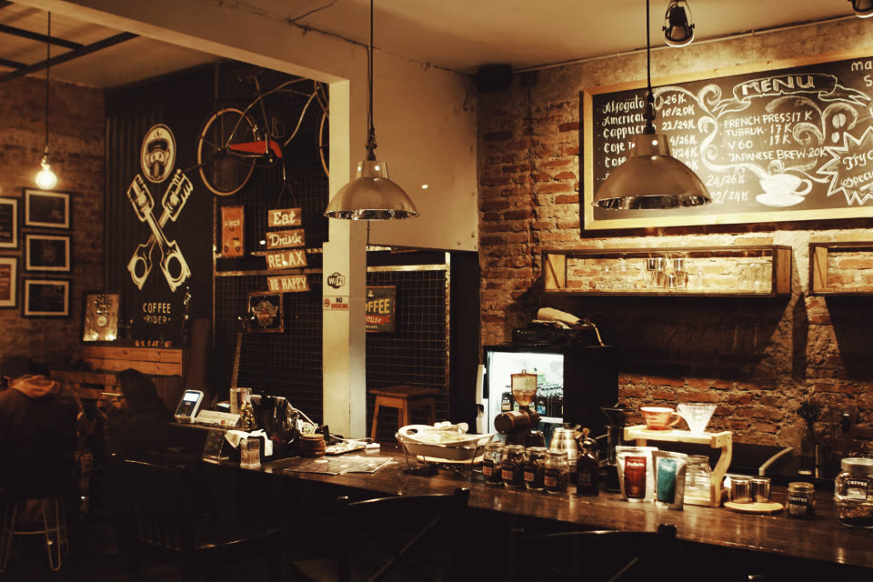
Italienische Feinkost, frischer Kaffee und ehrliche Küche mitten in Aachen.
Sorgfältig ausgewählte Delikatessen — direkt aus Italien für Ihre Speisekammer zuhause.
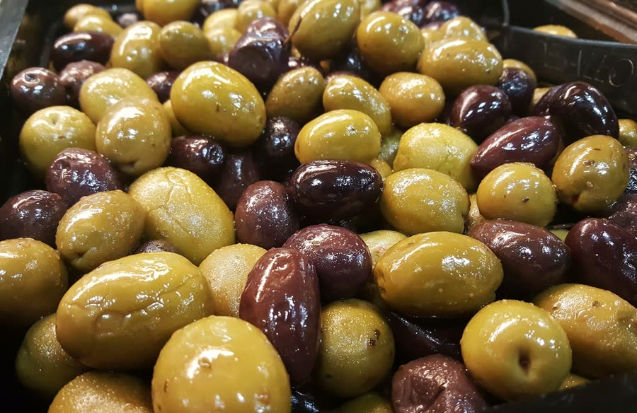
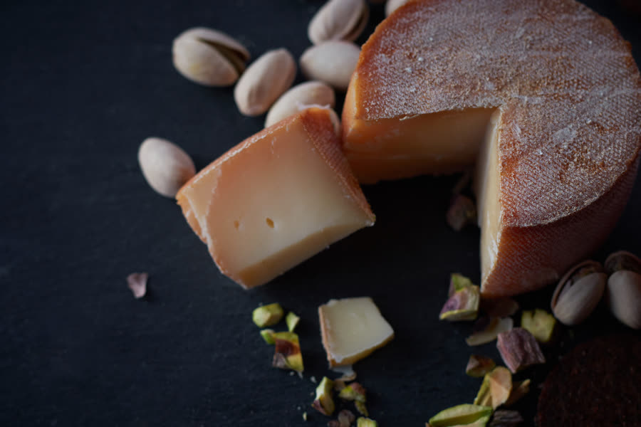
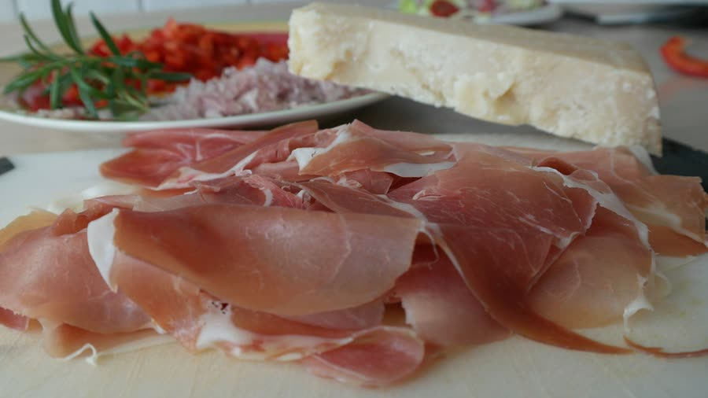
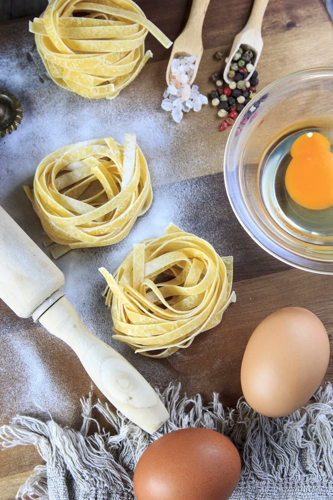
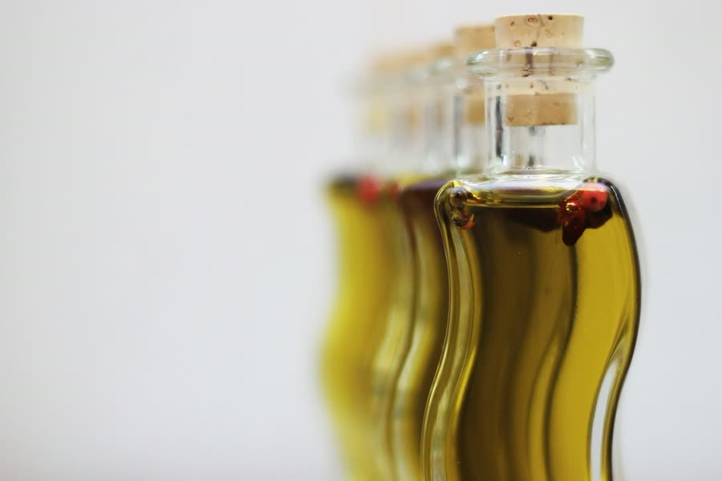
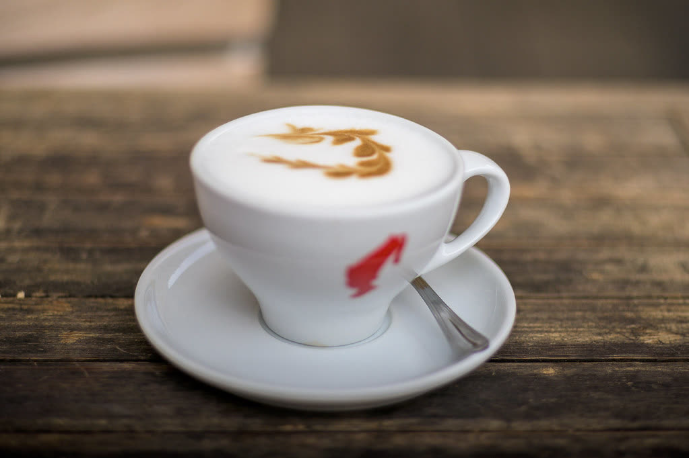
Ein Espresso an der Theke, ein Cappuccino im Sitzen — bei uns beginnt der Tag italienisch. Dazu täglich wechselnde Frische: hausgemachte Panini, Focaccia und kleine Süßspeisen.
Was frisch ist, hängt vom Tag ab — kommen Sie vorbei und lassen Sie sich überraschen.
Ob Geburtstag, Firmenfeier oder Familienfest — unser ganzes Café steht Ihnen exklusiv zur Verfügung. Wir kümmern uns um Ambiente und Verpflegung, italienisch und persönlich.
Anfrage senden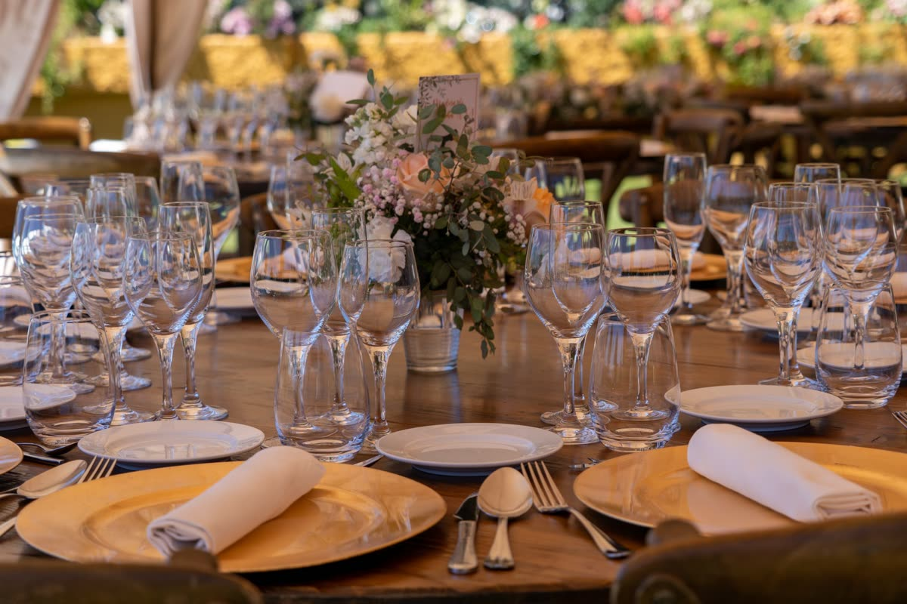
Lousbergstraße 66
52072 Aachen
Mi – Sa: 11:00 – 18:00 Uhr
So: 14:00 – 18:00 Uhr
Mo & Di: geschlossen
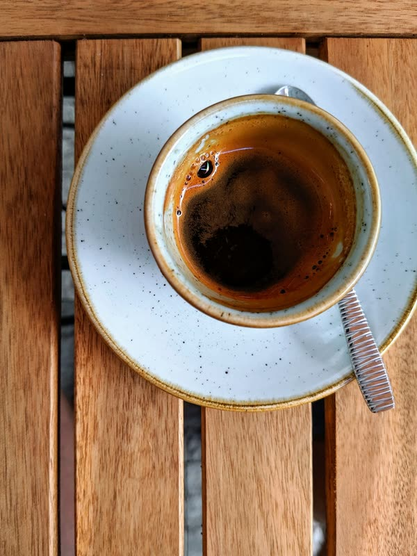
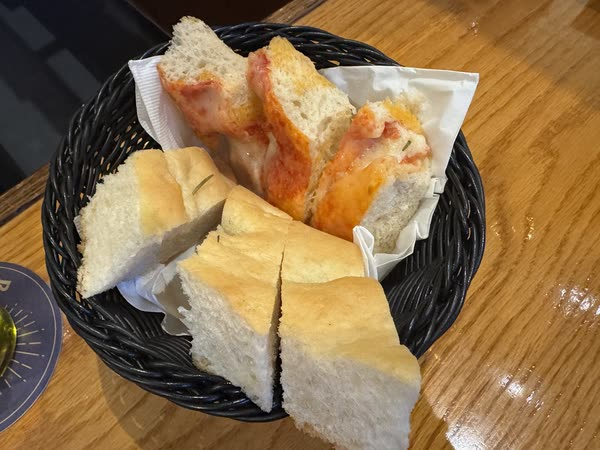
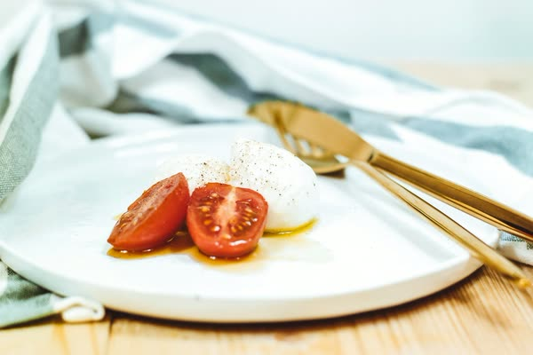
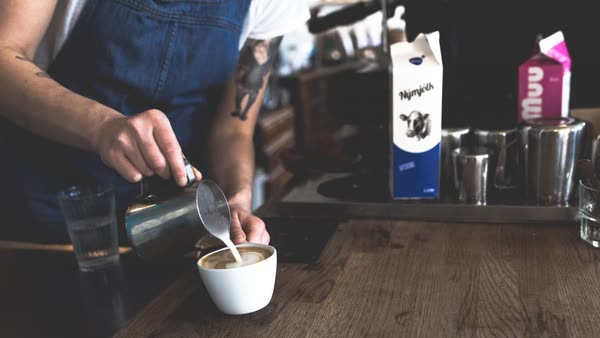
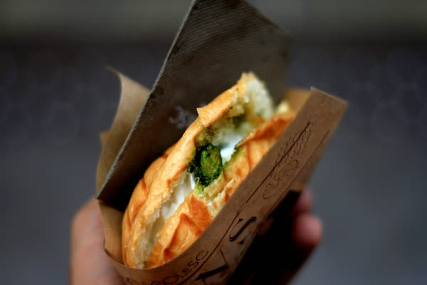
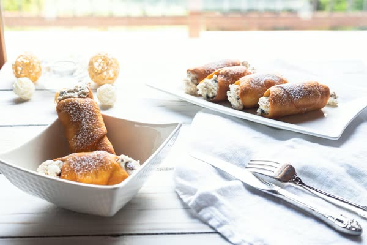